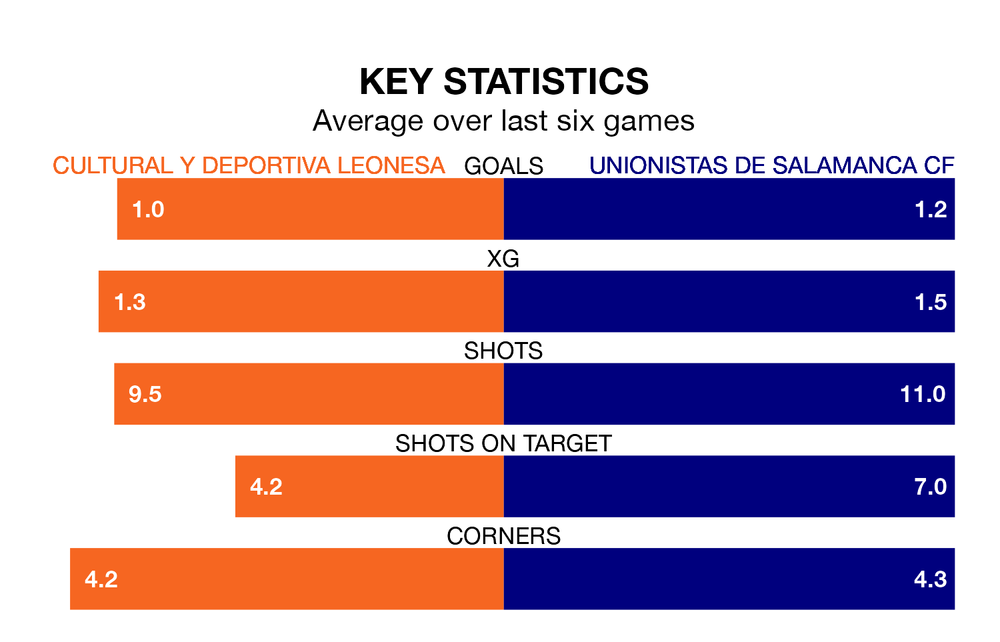

Two of Primera Division RFEF Group 1's meanest defences go head-to-head at the Estadio Municipal Reino de León on Sunday, when Cultural y Deportiva Leonesa host Unionistas de Salamanca CF.
Only one side – Gimnàstic de Tarragona – has conceded fewer goals than Cultural y Deportiva Leonesa to date: the home side have let in just 13 goals in 21 games.
Unionistas de Salamanca have conceded 16 goals in 21 games, giving them the fourth tightest back line so far this season.
Key to Cultural y Deportiva Leonesa's home form has been Miguel Bañuz Antón, who has allowed no goals past him per 90 minutes, the same rate as Pablo Cacharrón Blanco in the opposite net.
Cultural y Deportiva Leonesa are third in the table after 21 games, of which they have won 11 and drawn six, earning 39 points.
Unionistas de Salamanca are six places behind the home side in ninth, with seven wins and eight draws putting them on 29 points.
In the last 10 years, Cultural y Deportiva Leonesa and Unionistas de Salamanca have played each other on 11 occasions. Cultural y Deportiva Leonesa won five of them, Unionistas de Salamanca four, and they drew twice.
On average, Cultural y Deportiva Leonesa scored 1.0 goal and Unionistas de Salamanca 0.9 in those matches.
Their last meeting was on September 2, when Unionistas de Salamanca won 1-0 at home.
Cultural y Deportiva Leonesa are in mixed form in Primera Division RFEF Group 1, with two wins and three draws from their last six games.
With three wins and two draws over that period, the visitors' form is slightly better – they have taken 11 points from 18, compared to Cultural y Deportiva Leonesa's nine.
Cultural y Deportiva Leonesa's last match was on January 28, a 1-1 draw against Rayo Majadahonda, with Aleix Coch Lucena getting the goal for Cultural y Deportiva Leonesa.
Unionistas de Salamanca beat UE Cornellà 3-0 last time out, also on January 28, with, Alfred Planas and Héctor Fernández Fernández-Nespral on the scoresheet.
Updated: 10:03 (UTC), 30/01/24